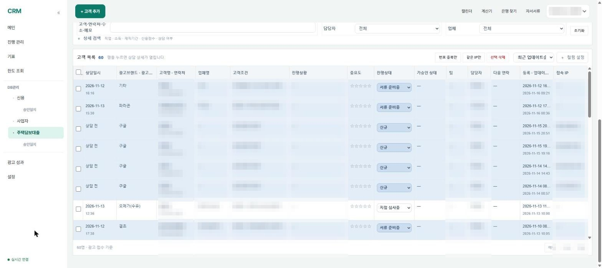
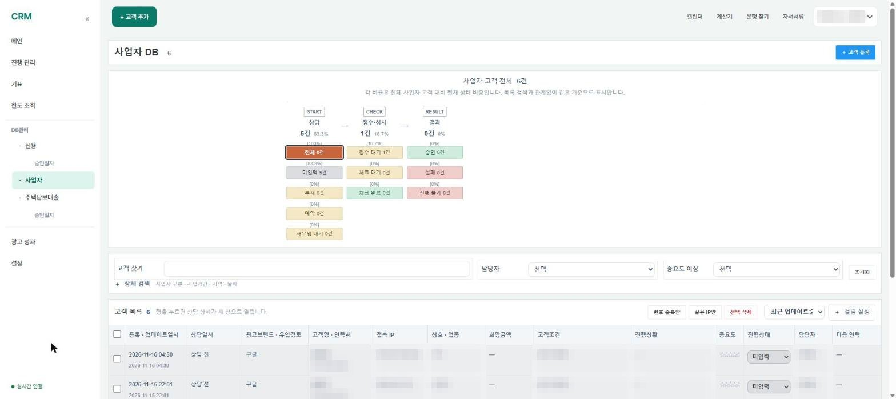
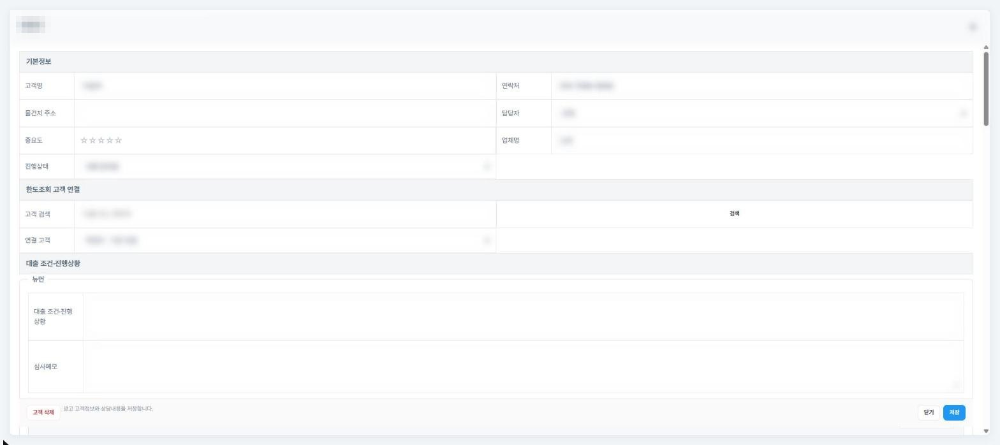
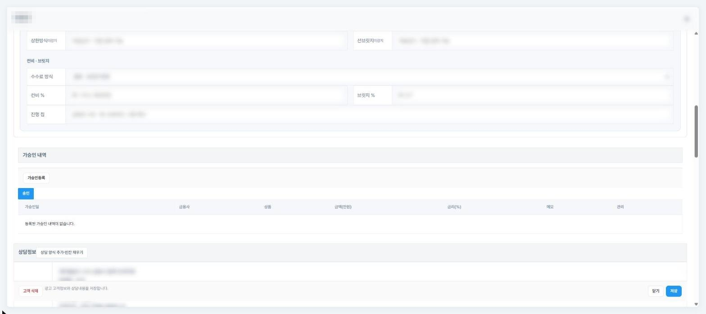

건명상담 전산 (CRM)
담당기획 · 화면 · 서버 · 배포
사용자상담원 · 관리자
상태운영 중
비고여러 명이 동시에 쓰고, 고친 내용이 바로 반영




상담원이 하루 종일 켜 두는 전산
광고로 들어온 고객을 대출 종류별로 나눠 관리하고, 상담과 심사, 업체 진행을 단계별로 추적합니다. 다른 상담원이 고친 내용은 새로고침 없이 바로 보입니다.
| 처리 내용 | 설명 |
|---|---|
| ✓대출 종류별 DB | 신용, 주택담보, 사업자를 따로 관리하고 단계별 건수와 비율을 보여줍니다. |
| ✓목록 설정 | 컬럼, 순서, 너비, 글자 크기를 사람마다 저장합니다. 한글 입력 중에도 검색이 끊기지 않습니다. |
| ✓작성 보호 | "닫았더니 날아갔어요"라는 말을 듣고 만들었습니다. 닫기 전에 묻고, 다시 열면 쓰던 내용을 불러옵니다. |
| ✓진행 관리 보드 | 카드를 끌어 상태를 바꾸고 단계별 진행 금액을 합산합니다. |
| ✓광고 성과 | Google Ads 비용을 매시간 받아와 신청, 상담, 승인까지 이어서 계산합니다. |
JavaScriptPocketBase실시간 구독Google Ads API